9th April 2015
What are the limits of what can be gotten away with in the UTF-8 context of a commercial web site like LinkedIn?
Limited support for multiple columns:
Ｃｏｌｕｍｎ Ａ Ｃｏｌｕｍｎ Ｂ Ｃｏｌｕｍｎ Ｃ
Surprisingly, the Unicode rendering functionality usually is complete enough that even things like RIGHT TO LEFT OVERRIDE work as expected. I wasn't able to bend it to animation, though.
ʇxǝʇ spɹɐʍʞɔɐq puɐ uʍop ǝpısdn
╔═╦╗
╠═╬╣ box drawing works well if enclosed in <pre> tags.
╚═╩╝
▂▃▄▅▆▇█ Tiny bar charts; i.e., Tufte's “sparklines” can be embedded, but font support for the necessary characters is problematic in browsers.
There is limited support for other graphics; e.g.,
╭╮
╰╯
25th March 2015
23rd March 2015
The entire site is now accessible via https://
and will quietly redirect from HTTP if entered that way.
24th February 2015
The software development and C&A consulting firm call-with-current-continuation.com, Inc.TM is open for business.
20th February 2015
| 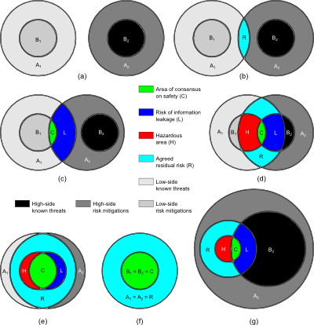 |
| Cross domain systems are unique because they always go into an adversarial environment with mutually distrustful data owners. |
An idea I've been playing around with for a while involves characterising every allowable permutation of cross domain system (CDS) in collateral, SCI, and international accreditations. The approach has been peer reviewed and published (13th IEEE Conference on Technologies for Homeland Security, Boston: 2013); the presentation here is based on a talk I gave last year.
Incident response, analytically, looks a lot like an international coalition; in the case of major incident response, you have large organisations trying to negotiate their jurisdiction and announce their capabilities, in a short amount of time, to those who need it.
(The moral of the story is: don't overlook potential applications of CDS in ephemeral situations—but to do that, we'll need faster and less expensive A&A.)
Cross domain systems exist to interconnect...anything. They will talk any protocol needed to do it—but they focus on protecting systems from each other. That's what distinguishes them from firewalls; a firewall is usually thought of as protecting an organisation's resources from outside threats, but a cross domain system protects the rest of the world from the organisation as well.
(If that reminds you of protecting financial markets from rogue traders with access to inside information, it should.)
Certification and accreditation testing are my interest. (“Assessment and Authorisation” is the preferred terminology, but I'm using the older “C&A” nomenclature here.) Certification testing is done on a particular configuration of hardware and software called the ‘evaluated configuration’. Usually, an evaluated configuration is not a realistic field setup, because certification testers usually want all the features turned on so they can test them. Penetration testing is often done at this phase; penetration testers similarly demand root access and source code. Much like covert channel analysis, penetration testing has no natural end state; pen testers, given enough time, nearly always can come up with yet another layer of attack. Part of my research aims to enable the cross domain system developer some measure of control over the duration of certification testing, which otherwise will stretch out to consume all of the available time and money and resources.
The second type of testing done on cross domain systems happens at the end of installation, but before approval-to-operate. It's called accreditation, and it's done—every time—on a particular installation, in a particular place, with a particular configuration and particular users. Certification may be done once, or at most once a year; accreditation is done every time you sell one.
It pays to get good at accreditation, because you'll be doing it lots.
Accreditation testing is interesting because for cross domain systems it always involves more than one accreditor—accreditors represent the interests of data owners—who mistrust one another. Since there are multiple accreditors, and since each one thinks his or her data is the most important, this leads directly to multiple rounds of testing. Everyone knows what the best attacks are; there's only so many variations on how you can test that. If every one of those accreditors, for due diligence, performs the same tests over and over again, we don't learn anything new. That's the problem I set out to solve.
| 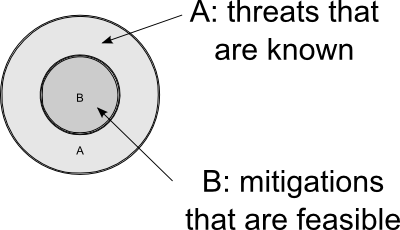 |
| The larger circle contains known threats that would be desirable to mitigate (surrounded, of course, by a larger universe of unknown threats); the smaller circle contains only those threats it is deemed possible to mitigate at this time. |
In my model, the following assumptions are required:
It's a minimal set of assumptions, not too unrealistic and not far off from the real world. First, we assume that all accreditors have just the right security clearance to do their jobs. If they work on Top Secret, they have a Top Secret clearance. If they only work on Confidential, then they will not have a Secret clearance, or a higher one. Everybody's cleared only to the level they need to be.
The second assumption is that there's a high side and a low side. That's often a matter of opinion, especially in international accreditations, but it simplifies the analysis. Besides, you can always partition any cross domain system with more than two inputs or outputs pairwise into a series of one-in-one-out cross domain systems. We used to have to do this all the time with pie-in-the-sky PL-5 customer requirements that we could compose out of one or more PL-4 approved components. PL-5 components are expensive; PL-4 components are not. So you can always reduce a cross domain problem, ultimately, to a high side and a low side.
Consider an accreditor's view of the system (above and to the right). The larger circle represents those threats that would be desirable to mitigate. The smaller circle contains the subset of threats that it's feasible to mitigate—everything has a cost, and not every security control the accreditor wants, the accreditor is likely to get. The area between the circles is the residual risk.
| 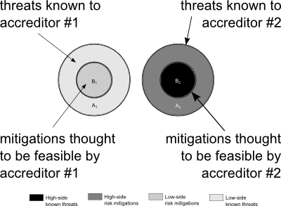 |
| SCI-type cross domain system |
In the figure to the right, we have a multi-level system. As soon as you have a multi-level system, you may have two accreditors, and in the most general case, shown here, they share no information.
To the right, then, is the essence of an SCI (or international) accreditation.
Accreditor 1 has a completely independent idea of what threats exist (A1) and what risk mitigations are possible (B1); similarly, Accreditor 2 is cognisant of a different set of risks (A2) that would be desirable to mitigate, and a smaller set (B2) of risks that are, from Accreditor 2's perspective, possible to mitigate. The sets are disjoint because we assume (in the most general case) that accreditors read into different compartments are unable or unwilling to share information.
The circles may overlap—of course they do!—everyone knows what the common attacks are, just as everyone knows what's affordable to mitigate. Those are your baseline security controls; what we're more interested in here are classified threats and classified threat mitigations.
| 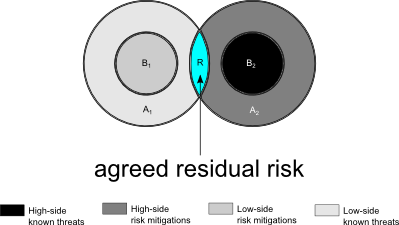 |
| Example of public information |
In the figure to the left, the highlighted area R is the agreed residual risk that both accreditors share. These particular accreditors don't share much—the question of which is the ‘high side’ and which is the ‘low side’ is often a matter of opinion, especially in the SCI world—but they agree on a few known threats. Both accreditors concur that some risks, highlighted here in cyan, are not protect-able against, and are going to remain a threat to the system in production, as residual risk. It's outside the smaller areas that both know they can mitigate.
In the general sense, A1 and A2 probably overlap to a greater or lesser degree—since everyone knows about the major problems: bot-nets and Heartbleed and script kiddies and what-not—but it's hard to draw Venn diagrams in three dimensions.
This is the ideal SCI situation, reachable sometimes in practice. Public information, after all, need not be protected from disclosure.
| 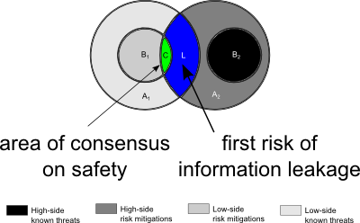 |
| Classified information with risk of information leakage |
But here's where things begin to get interesting. As the two accreditors perform their security testing, both of them learn more about the system under test. The small area C, shown in green, is safe because Accreditor 1 has mitigated it with security controls. The second accreditor can legally be made aware (without loss of generality) that that the first has mitigated that portion of the threat, so Accreditor 2 doesn't have to worry about area C any more.
But there's a new risk of information leakage from high to low. Region L, shown in dark blue, represents classified information—that is, the existence of a threat that is classified higher than the clearance of the low-side accreditor. (Remember the first assumption: that accreditors are cleared only as high as they need to be, in adherence to the letter and the spirit of the law.)
The high side accreditor, on the right side of the figure, doesn't want to admit to the low side accreditor that these threats still can't properly be mitigated even with classified security controls. But it's still safe, because the high side accreditor isn't compelled to say anything, and it's safer to keep his or her mouth shut. There's a threat of information leakage, but no actual information leakage, and the existence of the classified threat (for which no mitigation is feasible on the high side) remains protected.
| 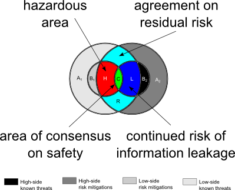 |
| The danger zone |
The red zone emerges with the occurrence of forced communication. The high side accreditor—and remember, this is an international (or SCI) cross domain system, so the question of which side is the high side is a matter of opinion—the high side accreditor knows something dangerous: he or she knows that some of the low-side security controls do not work. But that information is classified. The high side accreditor, though, personally accepts the risk for the correct operation of the entire cross domain system—not just part of it—if he or she accredits it.
Should the high-side accreditor refuse to accredit? To do otherwise would shoulder a known risk (that the true residual risk of the system is higher than generally believed); in that case the high-side accreditor runs the risk of going to jail. Unable to say precisely why he won't accredit—because that is a violation of his oath to protect classified information—if he refuses to accredit, even if he won't say why, the refusal in itself leaks the existence of a classified threat with no known mitigation.
Checkmate. (Note that the previous risk of leakage of the existence of classified threat mitigations, in dark blue, still exists, but that's a different kind of risk.)
Here, there is not only a risk of information leakage but personal risk to Accreditor 2; the red region H—remember, this is still an SCI accreditation—is believed by the first accreditor to be adequately mitigated by security controls, but the second accreditor either doesn't know about the first's mitigation or doesn't believe it'll work.
| 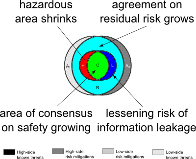 |
| As the situation approaches a purely collateral accreditation, the zone of hazardous overlap begins to shrink. |
As the two accreditors get more and more into each others' heads—facilitated by more overlap of their SCI compartments or international intelligence sharing agreements—the area of agreement over the true level of residual risk of the cross domain system grows. The risk of classified information leakage and personal risk to one or more accreditors diminishes as the situation approaches a pure collateral configuration.
In the degenerate situation, below, there is complete agreement on residual risk (A1 = A2 = R), complete consensus on safety (B1 = B2 = C), and both accreditors know all. It's not very interesting.
| 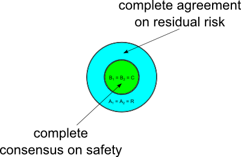 |
| The degenerate case |
That was the abstract situation—one that models international or SCI accreditations well, in situations where there is no formal channel of communication between accreditors on different sides. That's not an uncommon problem for cross domain system developers to find themselves in; does the U.S. government ‘outrank’ Her Majesty's own need for information protection? The U.K. government doesn't think so.
So let's look at a simpler case, one occurring entirely inside the U.S. military or U.S. government itself (although not inside the intelligence community—they use SCI). Here we're connecting a Top Secret network to a Secret one. We can assume from this point on that the high side accreditor knows everything the low side accreditor knows. But the high side accreditor knows more—Top Secret things. Regardless, it ought to be a solvable problem, because there is no inaccessible knowledge. There is information asymmetry, but no hidden information this time. (See the figure below and to the right.)
| 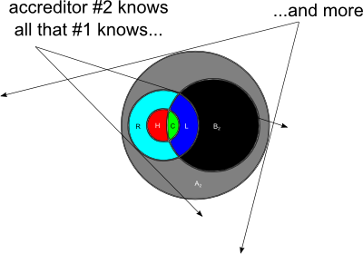 |
| Collateral CDS with different security clearances |
Oh, no—it happened again! As security testing progresses, it can occur that the high side accreditor becomes aware of security controls that the low side accreditor has put in place, in good faith, but that do not work. I call this ‘guilty knowledge’ (see below). The other areas in the Venn diagrams, the dark grey and black areas, are classified threats and classified threat mitigations that the high side accreditor can't talk about, because they're legitimately classified. But the area in red represents forced communication.
| 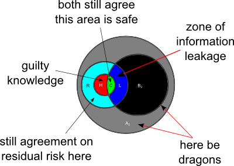 |
| Summary of collateral CDS difficulties: information leakage, ‘guilty knowledge’, and higher-classified threats and mitigations |
There is a paradox in the Bell–LaPadula security model. If you clear your accreditors only to the level they need to be cleared to do their jobs, then occasionally some desirable information flows are inhibited and some undesirable information flows are forced. If, on the other hand, you clear a pool of accreditors to Top Secret, and you use them on jobs that don't require a Top Secret clearance all the time, then the information asymmetry disappears and the information leakage doesn't happen. It is a paradox, that loosening the security rules actually improves security.
In some reachable cases, that is, in real installation problems that cross domain system developers and installers sometimes encounter in the field, desirable information flows may be inhibited, or undesirable information flows may be forced. These represent information asymmetry in the accreditor-to-accreditor relationship and are logical consequences of the hierarchical security relationship. We can't prevent them—the possibility is inherent, as we have seen, in SCI, international, and collateral accreditations.
But can we detect and avoid the trap? The goal of the Policy Interaction layer in our notional future cross domain solution is to find and highlight the problematic configurations during testing and development in order to streamline the process and reduce the cost (in both time and dollars) of CDS deployments.
More to come.
7th February 2015
This is for Papa, a link to a proof-of-concept implementation of a custom 404 error page that provides a more useful link back to content.
22nd January 2015
I've spent a few years caring deeply about the security testing of cross domain systems, a technology originally developed by the military and intelligence community, but with clear applications to other information-sharing problems like those faced by the health care industry.
My latest résumé is always here.
26th December 2014
New security contact information page here.
9th December 2014; updated 11th and 14th December 2014 and 14th February 2015
Optimal sequences for orders 1, 2, and 3 are easy to generate and not always unique; the optimal first order Banker's sequence, expressed in binary and starting from zero, is, of course, uniquely:
| Weight | Possible Bit Vectors | Graph1 |
|---|---|---|
| (0) | 0 | 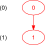 |
| (1) | 1 |
1Example path shown in red; click graph to embiggen (SVG).
The optimal second order Banker's sequence is not unique; it can be either of:
| Weight | Possible Bit Vectors | Graph2 | |
|---|---|---|---|
| (0) | 00 | 00 | 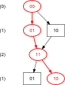 |
| (1) | 01 | 10 | |
| (2) | 11 | 11 | |
| (1) | 10 | 10 | |
2Example path shown in red; click graph to embiggen (SVG).
A third order Banker's sequence admits even more solutions; here are some (but possibly not all) of them:
| Weight | Possible Bit Vectors | Graph3 | ||||
|---|---|---|---|---|---|---|
| (0) | 000 | 000 | 000 | 000 | 000 | 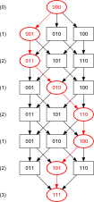 |
| (1) | 001 | 100 | 010 | 001 | 100 | |
| (2) | 011 | 110 | 011 | 101 | 101 | |
| (1) | 010 | 010 | 001 | 100 | 001 | |
| (2) | 110 | 011 | 101 | 110 | 011 | |
| (1) | 100 | 001 | 100 | 010 | 010 | |
| (2) | 101 | 101 | 110 | 011 | 110 | |
| (3) | 111 | 111 | 111 | 111 | 111 | |
3Example path shown in red; click graph to embiggen (SVG).
The fourth order Banker's sequence, surprisingly, is much trickier; this is the only known solution, so far, up to symmetry:4
| 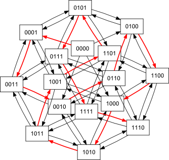 | or, equivalently, | 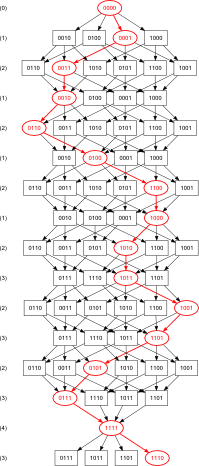 |
4Example path shown in red; click graphs to embiggen (SVG snowflake or optimal network).
It is not known whether this solution is unique, or if any optimal solutions exist for orders > 4. Development is under way of a programme to search exhaustively for all solutions in any n.
11th November 2014
I have intermittent network connectivity. What I wish for sometimes is a virtual TCP/IP that would fool network applications into working well enough, without hanging, until real network service returned, at which point it would silently catch up. Web pages would not load, obviously, but I could enter new Google calendar events, send emails, and commit changes to GitHub without having to wait and remember to do it later. As it is, I write notes to myself. I think the network stack could do something similar.
Clearly, new apps can be written to have the same behaviour, but this would enable old apps, without rewriting, to have the new features.
22nd October 2014
Copies of my published papers are hosted on this web site (you can find links to them on my résumé) or on the respective copyright holders' site. Where no freely available version is available (maybe it's behind a paywall), email me and I'll send you a copy.
20th August 2014
Key fingerprint:
2C3B 11A1 CE7C 5B1F 87BC F5D0 299D 7116 EDC2 ABE5
9th June 2014
The two examples of syntax-highlighted code below were done using two
different methods for implementing the indentation seen: the first uses
repeated entities (as many as needed), and the second was done
with div blocks that implement hanging
indents of the whole s-expression block automatically (as well
as some special inline div
tags that don't automatically put a newline after).
23rd February 2014
See Humans TXT: We Are People, Not Machines for information.
1st Jan 2014
I've been experimenting with CSS for syntax highlighting.
TO DO:
The first code example uses lots of span but no special div tags:
The second example uses the auto-indent div
method. Note that no character entities are needed
in the source:
It's a little disappointing that closing parentheses cannot be put inside the div blocks if we want to stack all the parens at the end, but if stacking the closing parens is not desired, then putting the closing paren after the closing /div keeps the indentation levels of the closing parens where they ought to be (i.e., don't put closing parens inside the closing /div.)
The third example was auto-generated by a syntax-highlighting parser:
(Note that a tab is automatically inserted before in-line comments; I may have to fix that.)
This didn't start out as a real blog; it started as a place for me to experiment with techniques I might want to use somewhere else.
All code here validates as HTML5 and CSS level 3 according to the W3C Markup Validation Service and CSS Validation Services.
Email me here: Joe.Loughry@callslashcc.com
Build 160
{kind=link}
{kind=link}
{kind=link}
{kind=link}
{kind=link}
{kind=link}
{kind=link}
{kind=link}
{kind=link}
{kind=link}
{kind=link}
{kind=link}
{kind=link}
{kind=link}
{kind=link}
{kind=link}
{kind=link}
{kind=link}
{kind=link}
{kind=link}